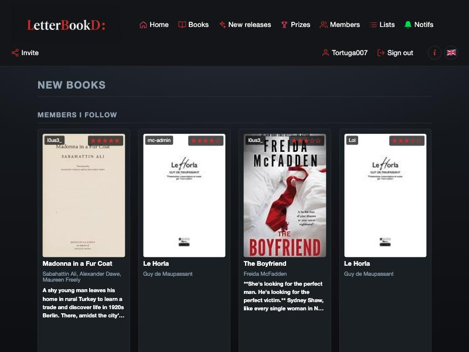

Home
Why it exists: See at a glance what is moving in your clubs: who just added which book, with what rating. It is your landing page after logging in and the main way into other members' new reads.

Walkthrough
The page opens on 'New books', split into two sections: 'Members I follow' (members you have bookmarked) and 'Other members' (the other members of your clubs). Each card shows the cover, the member's username, their rating (in stars), the title, the author, and the start of their review.
Click a cover to open the book page. Click the username to see the member's profile.
Action chains
Each row describes a trigger in the UI, the modal or form it opens, and the resulting effect.
| Trigger | Modal / Fields | Effect |
|---|---|---|
| Top navigation bar | Links: Home, Books, Releases, Prizes, Members, Lists, Notifs (green bell when something is unread), Invite. On the right: Moderation (visible only to admins), your username (profile), Log out, 'i' button (About), flag button (language). | Each link opens the matching page. The 'Notifs' bell turns green when you have unread notifications. |
| Click a book cover or title | — | Opens the detailed book page: reviews, average rating, and buttons to rate, suggest, or add to a list. |
| Click a member's username | — | Opens the member's profile (their reads, reviews and lists visible in your shared clubs). |